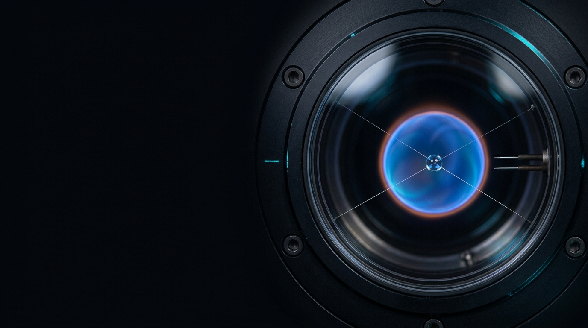
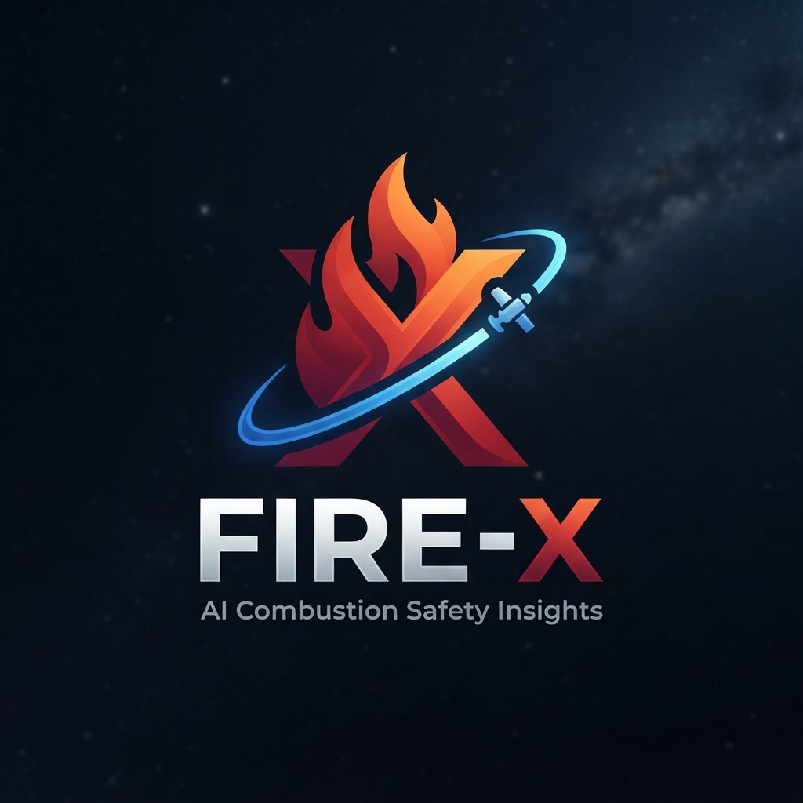
Mikroyerçəkimdə təbii konveksiya (buoyancy) yoxdur: alov yuxarı uzanan damcı şəklində deyil, oksigeni yalnız diffuziya ilə alan mavi sferik kürəyə çevrilir. NASA PSI bazasındakı onilliklərin sınaq nəticələrini tapmaq, müqayisə etmək və ekipaj mühitinə uyğun şərh etmək çətindir.
Saf oksigenli kabində qısaqapanma saniyələr içində kabini bürüdü — 3 ekipaj üzvü həlak oldu.
Aya uçuş zamanı 2 saylı oksigen çənində daxili alışma — missiyanın təcili xilas rejiminə keçidi.
Orbital stansiyada litium-perklorat şamı nasazlığı nəticəsində intensiv kabin yanğını.
Missiya zamanı kabində tüstü detektoru işə düşdü — Yerdən təxminən 80 000 mil məsafədə.
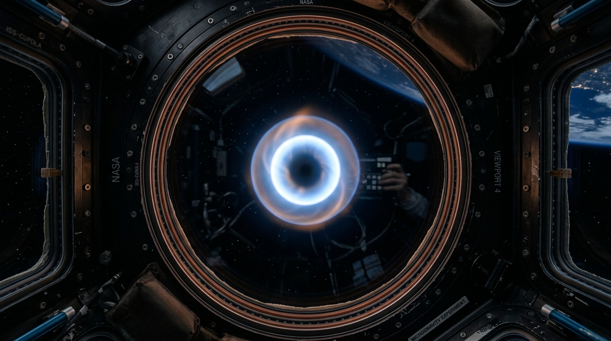
Tədqiqatçılar PSI cədvəllərini birləşdirmək, materialları müqayisə etmək və Yerdəki 1g sınaqları ilə 0g uçuş məlumatını əlaqələndirmək üçün vahid alətə ehtiyac duyur.
FIRE-X yeddi inteqrasiya edilmiş veb-moduldan və real fiziki sensor stansiyasından ibarətdir. Hər modul NASA Space Apps challenge-in konkret bir mühəndislik məqsədinə cavab verir.
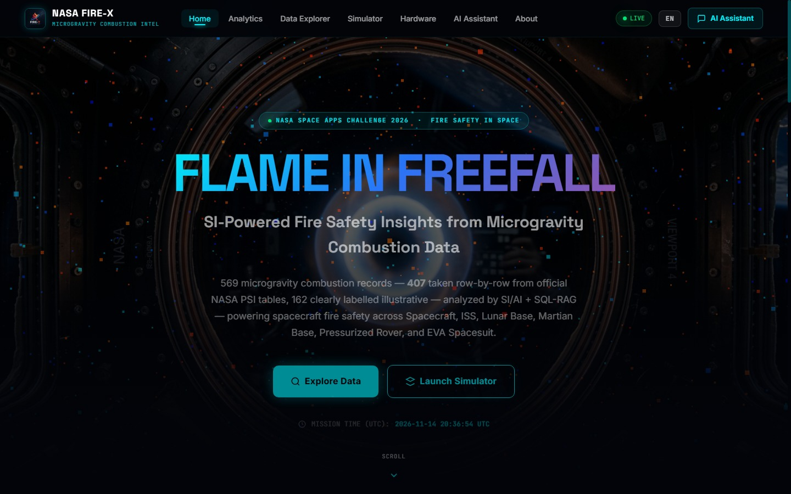
Sönmə diametri – O₂ asılılığı, konvektiv hava axını həddləri, sönmə taksonomiyası və interaktiv 3D/4D Holo-Lab.
569 sınaq üzrə çoxölçülü filtr (ailə, yanacaq, nəticə, O₂), detal baxışı, 2–4 sınağın müqayisəsi, CSV ixracı.
BKS, Orion, Ay bazası, Mars bazası, Rover və EVA skafandrı üçün FHI risk indeksi və Sİ tədqiqat reytinqi.
Canlı SQL sorğusu + GPT-4o-mini: cavablar yalnız bazadakı konkret PSI qeydlərinə istinad edir.
ESP32 + MQ-2 + MQ-4 + IR alov + Aktiv Buzzer + 3D Snap-Fit korpus (.STL) və saytdan iki tərəfli idarəetmə.
Tədqiqatlararası avadanlıq matrisi, NASA-STD-6001B / 3001 standartları, spinoff-lar və rəsmi PSI linkləri.
Sətir-sətir rəsmi PSI cədvəllərindən: FLEX (PSI-69: 274), BASS-II (PSI-25: 129), SAFFIRE-I (PSI-98: 4). Digər tədqiqatlar (ACME, SAME, SPICE, SLICE, DAFT…) nəşrlərdən tərtib olunub və bütün sistemdə ⚠ illüstrativ kimi işarələnir.
| Qurğu / Platforma | Tədqiqat Ailələri | Yanacaq Növü |
|---|---|---|
| ISS CIR · MDCA | FLEX, FLEX-2, CFI | Maye damcılar |
| ISS CIR · ACME | BRE, CLD, s-Flame, E-FIELD, CFI-G | Qaz alovları |
| ISS MSG · SPICE kanalı | BASS, BASS-II, SPICE, SLICE | Bərk + qaz |
| ISS MSG · aerozol | SAME, SAME-R, DAFT | Tüstü / toz |
| Cygnus Kosmik Gəmisi | SAFFIRE-I, -II, -III | İri ölçülü bərk |
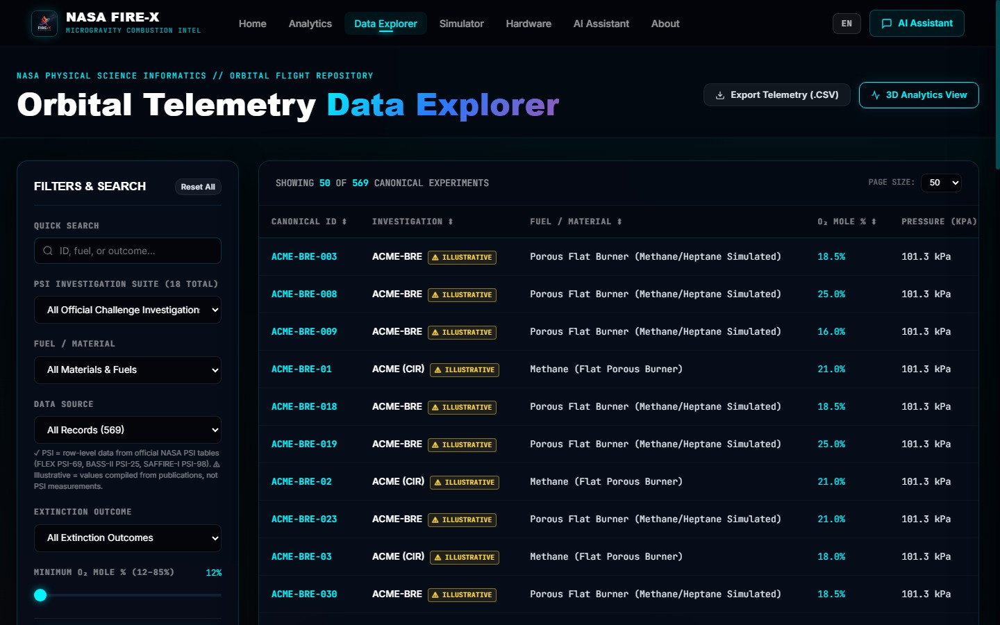
Hər sətirdə saxlanılır: O₂ mol %, təzyiq (kPa), CO₂/He durulaşdırma, hava axını (sm/s), yanma müddəti, sönmə diametri və rəsmi PSI linki.
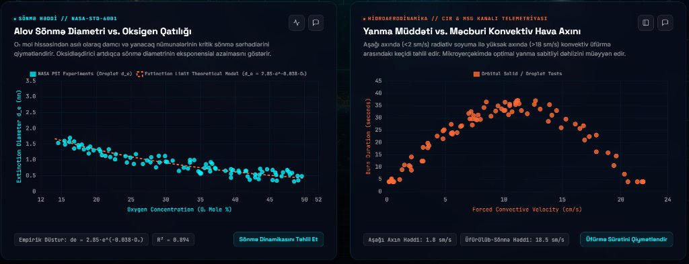
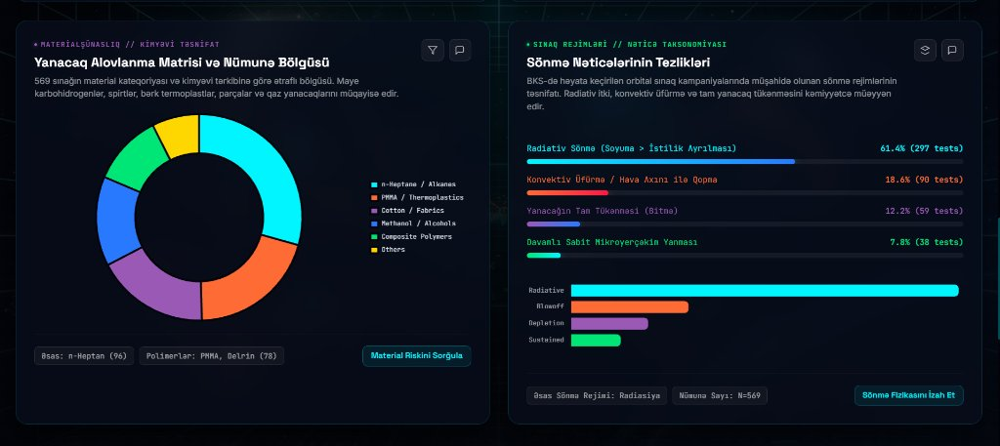
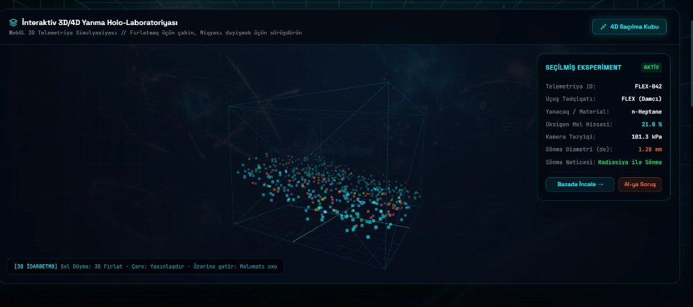
İstifadəçi kosmik yaşayış mühitini seçir — FIRE-X atmosferə (O₂, təzyiq), cazibəyə və hava axınına görə sınaqları reytinqləyir, FHI indeksini və lazımi boğucu qaz qatılığını hesablayır.
| BKS (ISS · 0g) | 21% O₂ · 14.7 psi | FHI 5.1 |
| Orion Kosmik Gəmisi | 26.5% O₂ · 10.2 psi | FHI 6.2 |
| Ay Bazası (0.16g) | 34% O₂ · 8.2 psi | FHI 8.3 |
| Mars Bazası (0.38g) | 34% O₂ · 8.2 psi | FHI 8.3 |
| Hermetik Rover | 32% O₂ · 10.2 psi | FHI 8.3 |
| EVA Skafandr | 100% O₂ · 4.3 psi | FHI 10.0 |
PSI-də hələ real qismən cazibə datası yoxdur (LUCI və FM2 gözlənilir). FIRE-X Ay (0.16g) və Mars (0.38g) üçün riski 0g PSI ilə 1g NASA-STD-6001 arasında sərhədləyir; ACME E-FIELD aralıq nöqtədir.
OEF — oksigen artımı, PF — təzyiq faktoru, Mf — material indeksi. Yuxarı sərhəd: CFI-G (85% O₂).
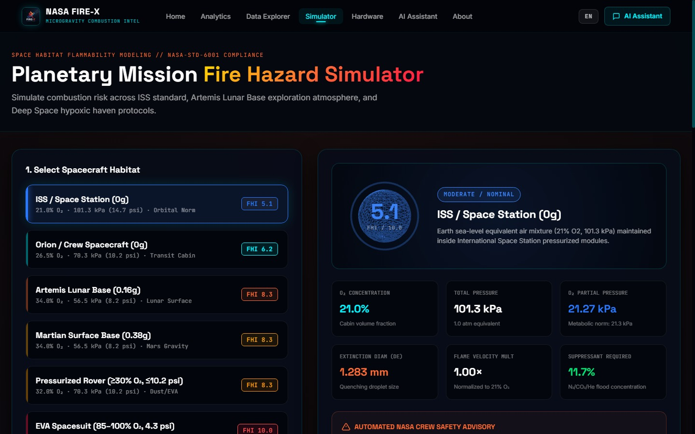
Sİ köməkçi ümumi yaddaşdan uydurma rəqəm çıxarmır — hər sorğu əvvəlcə canlı SQLite verilənlər bazasına müraciət edir və yalnız real sınaq qeydləri əsasında cavab verir.
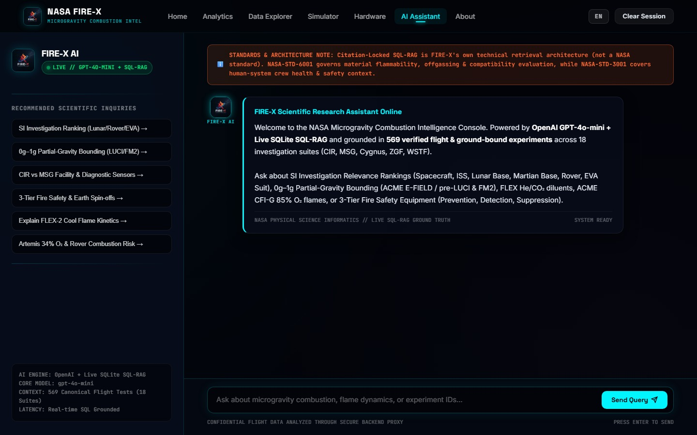
Verilənlər bazasında empirik data yoxdursa (məsələn, real Ay cazibəsi sınaqları), model təxmin uydurmur — açıq şəkildə “kifayət qədər empirik data yoxdur” deyir.
NASA-STD-6001: material alışqanlığı və qaz buraxma. NASA-STD-3001: ekipaj sağlamlığı. SQL-RAG FIRE-X-in öz retrieval arxitekturasıdır.
NASA-nın “Aşkarlama” səviyyəsinin Yerdəki tam işlək modeli: üç fərqli fiziki sensor, aktiv akustik siren, iki tərəfli veb əlaqəsi və 100% yapışqansız 3D çap edilə bilən korpus.
Wi-Fi HTTP server + /data JSON telemetriyası + USB Serial (115200 baud)
GPIO 34 · ADC1 kanalı (Wi-Fi aktiv ikən fasiləsiz 12-bit oxunuş)
GPIO 35 · ADC1 kanalı (təbii qaz və uçucu sızma detektoru)
IR: GPIO 25 (açıq alov) · Aktiv Buzzer: GPIO 23 (saytdan səsi aç/bağla)
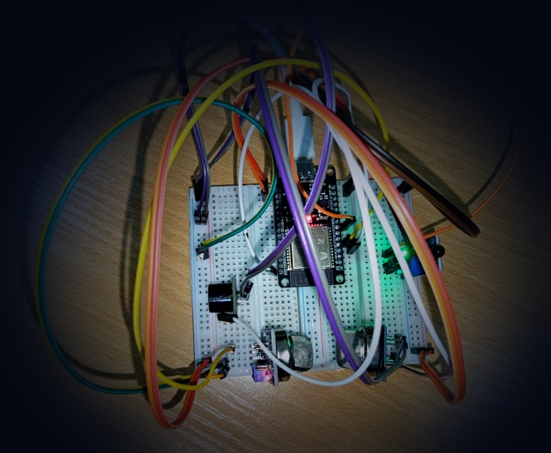
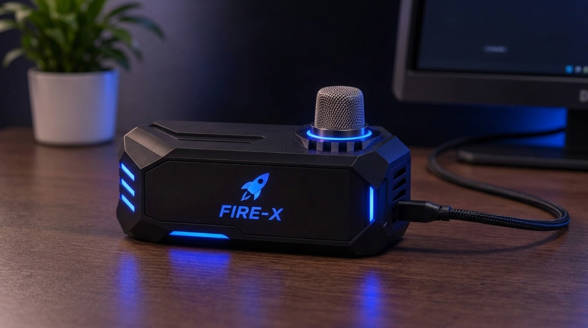
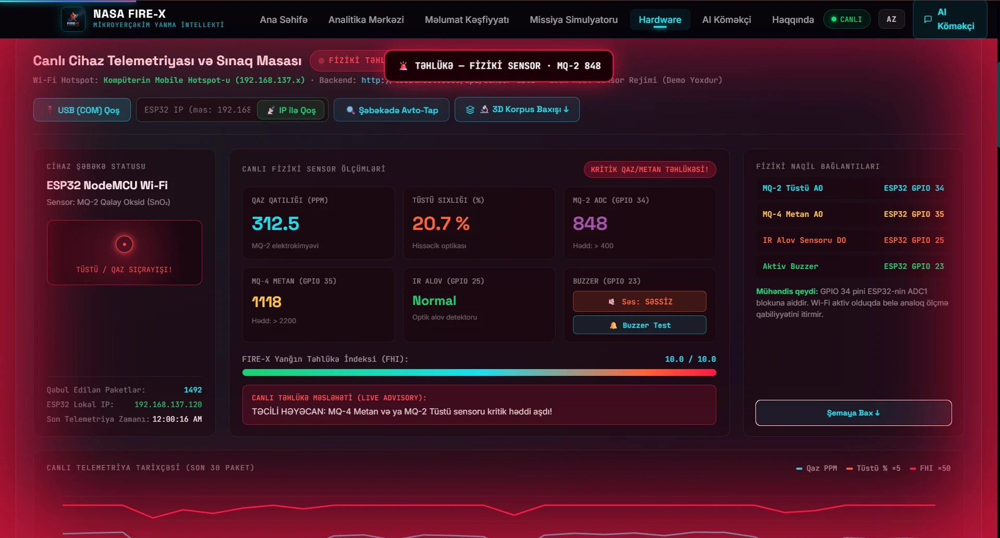
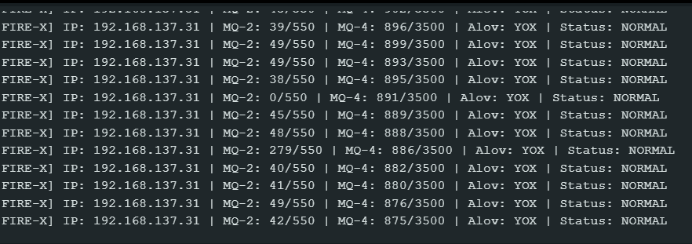
SAME & SAME-R Aşkarlama: Challenge tüstü aşkarlamasının əsas orbital sınaqları kimi SAME / SAME-R-i göstərir — stansiyamız çox-sensorlu qaz + optik alov aşkarlamasını Yerdə reallaşdırır.
Fire Detector Spinoff (node/9407): NASA tüstünü tozdan fərqləndirərək yalançı həyəcanı azaldan texnologiyanı nümunə gətirir — fon kalibrləməsi və histerezisimiz eyni məqsədə xidmət edir.
Canlı Sübut: Saytdakı “Buzzer Test” / səssiz rejim masadakı sireni idarə edir; kabel və ya Wi-Fi kəsiləndə dashboard 10 s-də gözləmə rejiminə qayıdır (0 uydurma rəqəm).
| NASA Challenge Tələbi | FIRE-X Həllində Tətbiqi | |
|---|---|---|
| Ekipaj mühitləri üçün ən uyğun tədqiqatları tapmaq | 6 mühit üzrə Sİ tədqiqat reytinqi + FHI | ✓ |
| Proqnoz modelləşdirmə üçün data çıxarmaq | Çoxölçülü filtr + müqayisə + mənbə etiketli CSV | ✓ |
| Növbəti nəsil avadanlığa təsir edən tədqiqatlar | 3 səviyyəli təsir matrisi (Prevent / Detect / Suppress) | ✓ |
| Oxşarlıq və fərqlər (qurğu, yanacaq, sensor) | Tədqiqatlararası avadanlıq matrisi (CIR, MSG, Cygnus) | ✓ |
| Qismən cazibə (LUCI, FM2 hələ yoxdur) | 0g–1g sərhəd modeli + ACME E-FIELD aralıq nöqtəsi | ✓ |
| Yerdə yanğın təhlükəsizliyi tətbiqləri | NASA Spinoff-lar (node/9407) + canlı sensor stansiyası | ✓ |
| Raket yanacaqları — əhatədən kənar | Ekipaj kabin alışqanlığına fokuslanaraq açıq istisna edilib | ✓ |
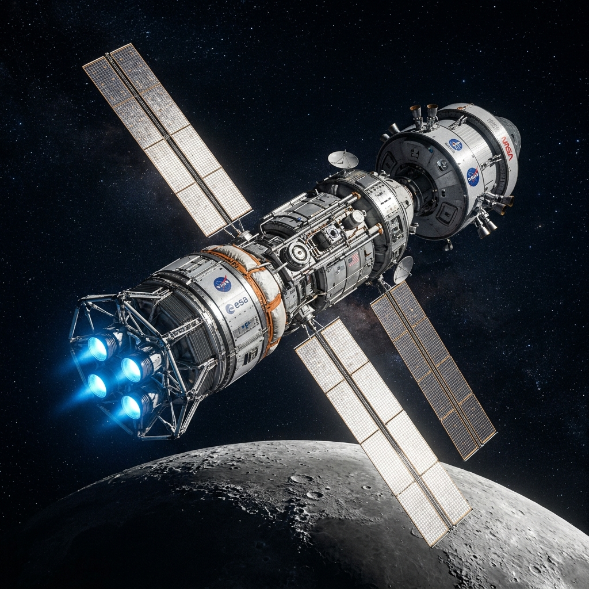